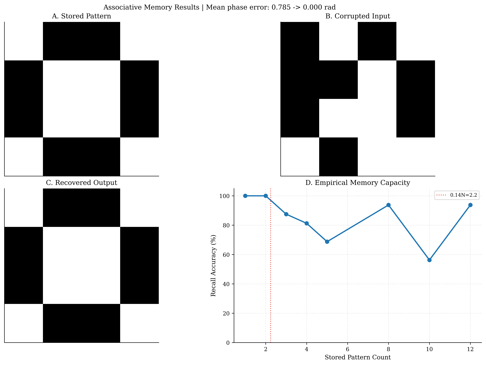
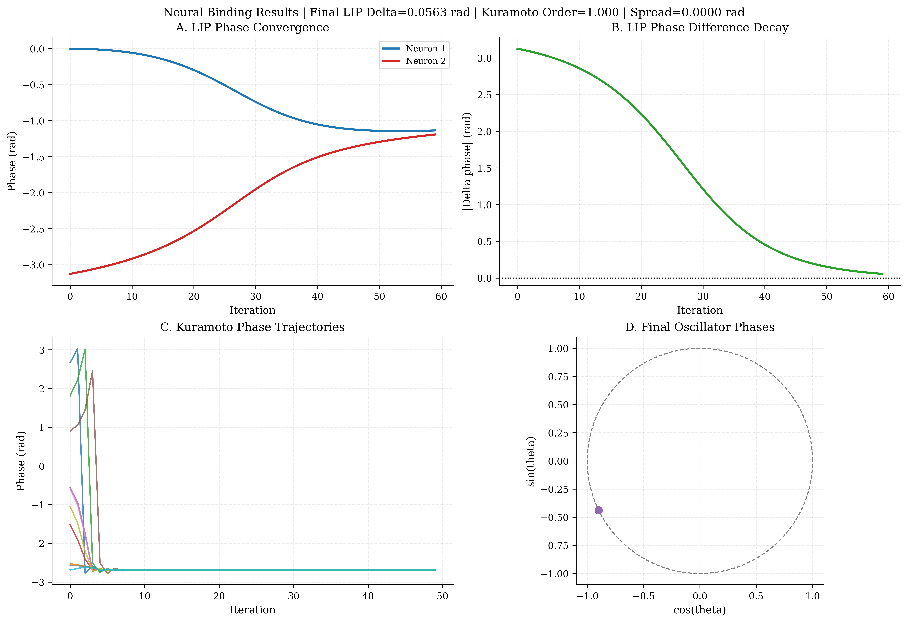

Neuromorphic Capabilities
Because PhasorFlow rigorously constrains computational features onto the physical oscillatory manifolds defined strictly between \(2\pi\) radians, it naturally bridges seamlessly with Neuromorphic Scientific Computing—scaling and mapping biological rhythms identical to the brain dynamically.
Oscillatory Associative Memory (Hopfield Modeling)
Reproduce natively in: examples/ex_05_associative_memory.py

The PhasorFlowMemory sub-module models organic cognitive memory by instantiating networks of bounded mathematical oscillators. You initialize sequence patterns, and the rigid structural grid physically binds them into geometrical holographic "Attractors."
Topology Bounding
Given an underlying geometric matrix of \(N\) oscillators, we store a set of \(P\) phase patterns \(\boldsymbol{z}^{(p)} = e^{i \boldsymbol{\theta}^{(p)}}\) via Hebbian learning:
This rigidly locks arrays of continuous vectors combining their absolute mathematical phase conjugates.
Continuous Fault Tolerance & Denoising
If we generate a random input state actively corrupted by 20% phase structural noise from internal network routing and pass it chronologically into the memory circuit, the associative physics exert mathematical analog gravity. Pattern recovery proceeds via iterative phase-locking:
This continuously forces the system exactly toward the correct bound minimum (attractor), enabling robust fault-tolerant retrieval.
from phasorflow.neuromorphic.associative_memory import PhasorFlowMemory
import numpy as np
# Network holding 10 continuous Phase mappings
mem = PhasorFlowMemory(num_threads=10)
mem.store([target_memory_pattern])
# After just a few geometric iterations, the state locks in identically (< 0.05 rad error)
recovered_state = mem.converge(noisy_input, iterations=10)
Leaky-Integrate-and-Phase (LIP) / Neural Binding
Reproduce natively in: examples/ex_04_neural_binding.py

The canonical mechanism driving biological neural processing relies exclusively on spiking neurons. PhasorFlow maps continuous sequence physics natively utilizing Leaky-Integrate-and-Phase (LIP), simulating phase return gradients punctuated heavily by matrix MIX entanglements modeling exactly how physical firing vectors collapse their adjacent synaptic geometric grids.
Phase Synchronization (The Kuramoto Model)
We mathematically simulate global neural binding via synchronized oscillating networks identically to biological macro-coherence functions. The LIP continuous-time dynamical system is governed natively by the Kuramoto phase derivative:
where \(\gamma\) is the leak rate, \(\theta_{\text{rest}}\) is the resting phase, \(W_{kj}\) are synaptic coupling weights, and \(I_k^{\text{ext}}\) is external input.
Providing a randomly distributed \(N=20\) matrix, we can execute structural binding over standard discrete steps. Over chronological integration logic, phase-coupling physically bridges disparate rhythmic geometries automatically locking phase dynamics into macro-states \(\ge 0.95\) continuous consensus—the exact physical behavior defining conscious cognitive binding mechanics natively inside Python matrices!
© 2026 Mindverse Computing LLC.
Licensed under CC BY-NC 4.0.
See LICENSE file for patent and commercial restrictions.